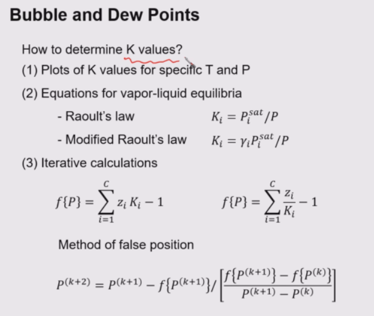
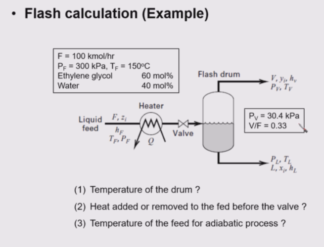
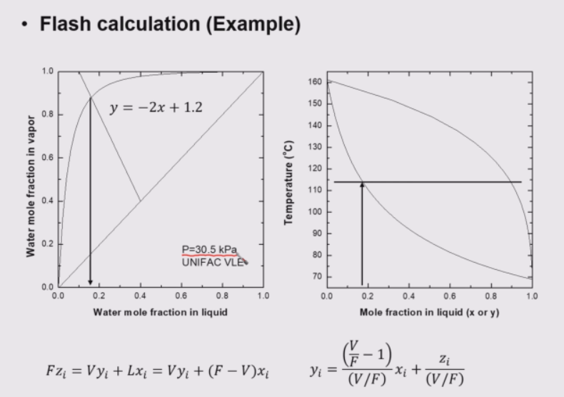
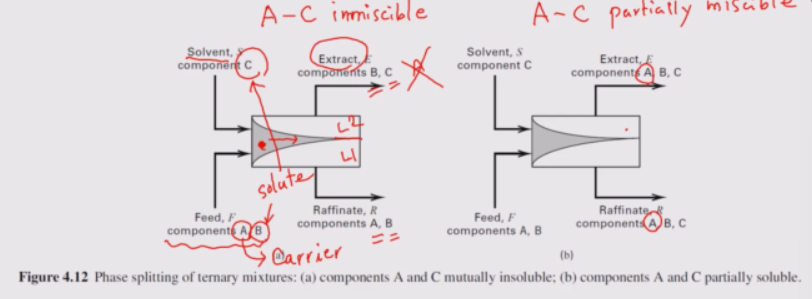
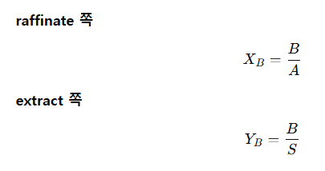
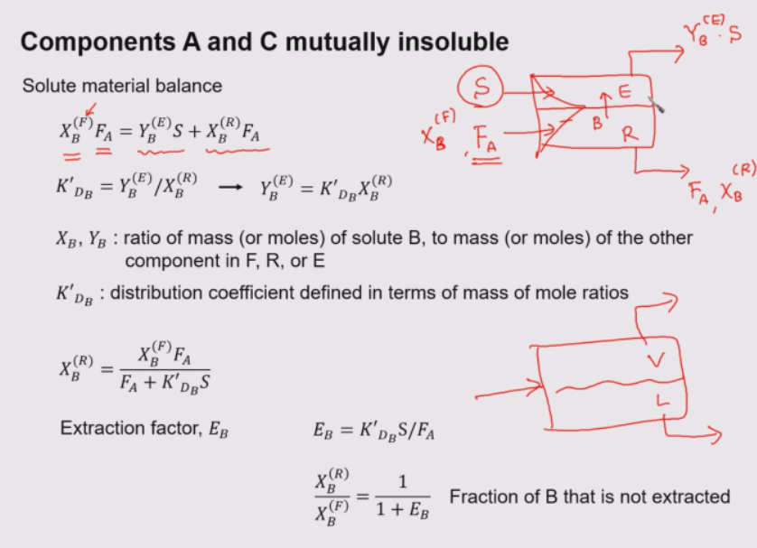
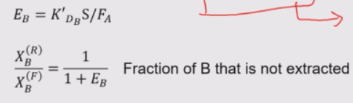

분리공정- flash vaporization과 liquid-liquid extraction
일단 이번 포스팅에서는 다음을 다룰 것이다.
- VLE(기-액 평형) 기반 single-stage separation
- 플래시 증발
- 버블 포인트
- 듀 포인트
- 단열 플래시
- LLE(액-액 평형) 기반 single-stage separation
- 액액추출(extraction)
- extract / raffinate
- distribution coefficient KD
- extraction factor EB
즉,
- 앞부분은 액체와 기체로 나뉘는 분리
- 뒷부분은 액체 두 상으로 나뉘는 분리
-------
플래시 베이퍼라이제이션은 결국 단이 하나인 증류(single-stage distillation)이다. 피드 조건이 주어져 있어도 전체 상태를 다 결정하려면 추가로 두 개의 조건이 더 필요하고, 그 두 조건이 무엇이냐에 따라 문제가 isothermal flash, bubble point, dew point, adiabatic flash, partial vaporization 같은 식으로 나뉜다.
- T,P 주어짐 → isothermal flash
- P,Q=0주어짐 → adiabatic flash
- T,V/F=1T→ dew point
- T,V/F=0→ bubble point
- P,V/F=특정값 → partial vaporization flash
이렇게 두 개가 주어지면, 나머지 조건들을 알아낼 수 있다.

그리고 이런 계산을 하려면 공통적으로 K-value를 반드시 알아야 한다. 위에 제시된 그래프를 이용해 얻는 방법과 라울 법칙 같은걸로 K계산하는 방법 등이 있다. 즉 플래시 계산은 결국 “주어진 두 조건으로 K값을 정하고, 그걸 바탕으로 평형과 물질수지를 맞춰 나머지를 푸는 문제이다. (리치폴드 라이스 식 이용)
이러한 계산은 보통 시뮬레이터가 해준다. 일반적인 부분 증발 플래시 문제를 풀어보자.

피드 조건은 다 주어져 있고, 추가 조건으로는드럼 압력과 vapor fraction가 있다. V/F=0.33으로 주어졌다. 즉 피드만 주어져 있고, 온도와 각 상의 조성은 모르는 상태이다.

그래피컬 해석으로 풀어보자. 먼저 주어진 압력에서 x-y diagram을 그리고, 여기에 피드 조성과 V/F조건으로부터 얻어지는 q-line(혹은 mass balance line) 을 그린다. 이 q-line은 피드점을 지나고 기울기는 V/F또는 L/F= q 조건으로 정해진다. q-line과 평형곡선의 교점이 바로 평형 상태의 liquid 조성과 vapor 조성이 된다. 조성이 정해지면, 같은 압력의 T-x-y diagram 으로 넘어가 그 두 조성을 동시에 만족하는 온도를 찾을 수 있다. 예시에서는 약 115°C 정도가 나온다. 압력에서 x-y로 조성을 찾고, 그다음 T-x-y에서 온도를 읽는 것이 해결 방법이다.
만약에 시뮬레이터로 풀거면은 에틸렌글리콜/물처럼 극성계는 activity coefficient model을 쓰는 것이 맞다. vapor phase는 EOS(SRK 같은 것), liquid phase는 UNIFAC 같은 모델을 조합해서 계산한다. pressure와 vapor fraction으로 조성을 구하고, 조성으로 온도를 구한다는 흐름을 기억하자.
여기서 일단 VLE(기-액 평형) 기반 single-stage separation는 끝내도록 한다.
-------------------------
liquid-liquid system, 특히 single-stage extraction을 보도록 하자. 이건 액체+액체인 상태이다.
피드에는 보통 두 성분 A와 B가 섞여 있고, 이 중에서 우리가 뽑아내고 싶은 성분 B가 solute, 솔루트를 그냥 실어 나르는 역할인 A가 carrier이다. 여기에 제 3의 물질 C(solvent)를 넣는다. C는 A는 잘 안녹고 B를 잘 녹인다. solvent를 넣으면 원래 피드와 만나서 ternary mixture가 되고, 시간이 지나면 두 개의 액상으로 갈라진다. 이렇게 생긴 두 액상 중에서 solute가 solvent 쪽으로 더 많이 간 스트림을 extract(B,C), 피드 쪽에서 solute가 빠지고 남은 스트림을 raffinate(A,B)라고 한다.

이때 중요한 경우가 두 가지. 하나는 carrier와 solvent가 서로 완전히 안 섞이는 경우, 다른 하나는 부분적으로 섞이는 경우다. 첫 번째 경우는 계산이 매우 단순하다. carrier와 solvent가 완전히 불용이면 A는 raffinate 쪽으로만 가고, C는 extract 쪽으로만 간다. 그러면 결국 양쪽에 분배되는 건 solute B뿐이라서 문제가 아주 단순해진다.
이 경우에 조성을 약간 다르게 정의할 필요가 있다. 보통 조성이라고 하면, 소금/소금물 *100 처럼 일부/전체 이렇게 보는데, 액액추출에서는 약간 다르다.

이렇게 정의한다는 것을 명심해라. 이는 편의를 위한 것으로, 그냥 외워야 한다.

현재 액액추출에서 A와 C(S)가 섞이지 않는 케이스를 보고있다. 이 경우에는 들어오는 B가 이동하기 때문에 B에 대한 물질수지를 세울 수 있다. 들어온 B = extract(S)로 간 B + raffinate에 남은 B. 이때 VLE의 K-value에 대응되는 분배계수 KD를 정의한다. 이는 B가 raffinate와 extract 사이에 어떻게 분배되느냐 ( 비율의 비)로 이것이 높을 수록 추출이 잘된다는 것이다. 이 식을 대입하면 식을 정리할 수 있는데, 최종적으로 다음과 같이 정리된다.

암기를 추천하며 이때 EB는 extraction factor로 추출하는 힘이 얼마나 쎄냐를 나타내는 수이다. 이걸 가지고 넣어준 것 중 raffinate에 남아 있는 B의 fraction, 안 뽑히고 남은 양이 얼마인지를 식으로 나타낼 수 있다. 얼마나 안 추출되고 남았는가를 보여주는 식이다.
(distribution coefficient = 평형이 얼마나 extract 쪽을 좋아하냐
extraction factor = 그 평형 성향 + 용매를 캐리어 대비 얼마나 넣었는지까지 반영한 실제 추출 세기)